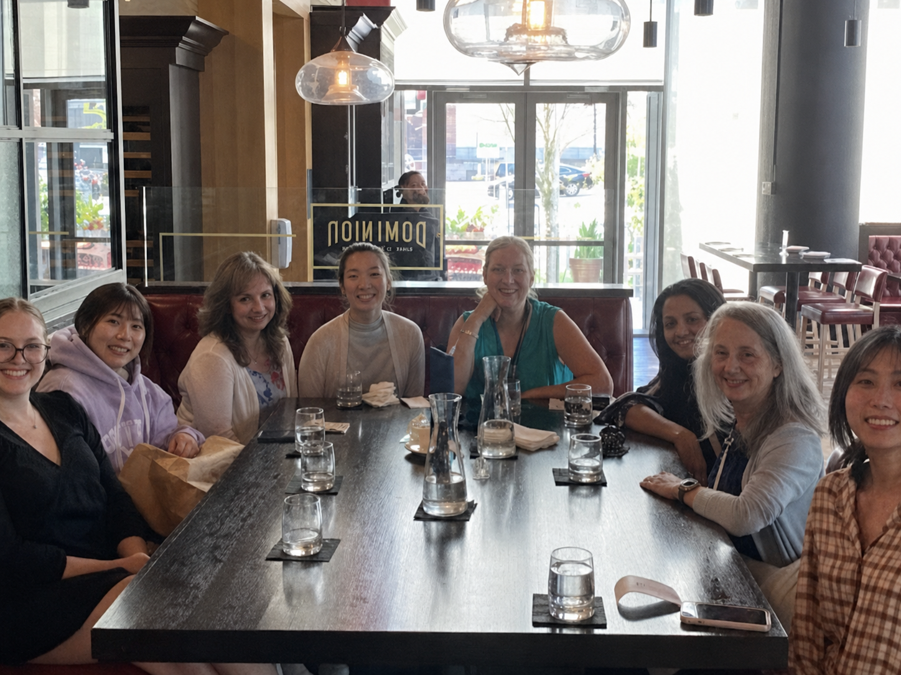
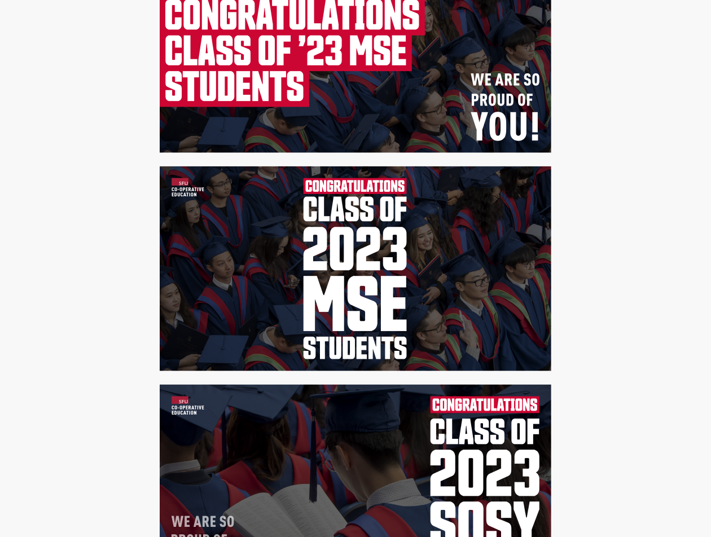
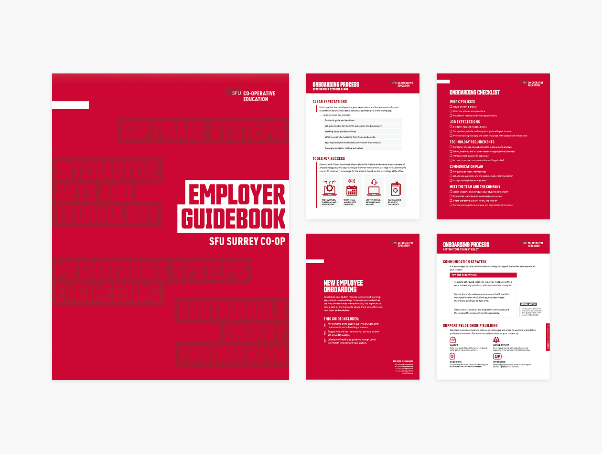

UX & content
Canvas audit, navigation, hierarchy, and content clarity.
Over eight months with Simon Fraser University's Co-operative Education team, I worked across UX research, information design, and visual communication to improve student-facing resources and internal materials. Across each project, the challenge stayed similar: making complex information easier to understand while working within an established brand and program.
After reviewing my first project, SFU’s Communications & Marketing Manager noted that I was the quickest intern to learn and apply the brand guidelines.
My work spanned different teams, audiences, and formats across SFU Co-op—from improving how students navigated information to translating research and program content into clearer communications.
KEY FOCUS
UX & content
Canvas audit, navigation, hierarchy, and content clarity.
Research
Interviews, synthesis, and student-focused insights.
Information & Visual Design
Infographics, data visualization, presentation design, and PDF/document layouts.
Systems
Reusable templates and consistent layouts.



SFU Co-op was my first professional design placement, and designing continuously within an established organization and brand system.
Working across teams taught me how quickly understanding an existing design system makes collaboration easier. Following a brand system did not mean using the same layout everywhere. Each project still required understanding the audience, the information, and the context.
The biggest lesson was about handoff. Valuable design work was not necessarily the most visually complex. It was clear, reusable, and structured enough for another person to continue using after I left.